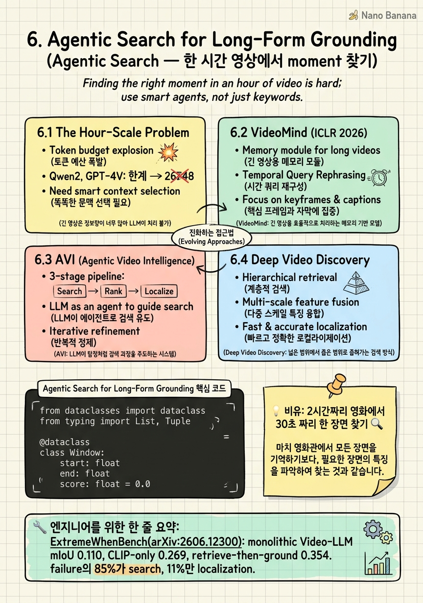

Agentic Search for Long-Form Grounding

🎯 학습 목표
- Hour-scale에서 token budget이 어떻게 폭발하며, 왜 frame downsampling으로 풀 수 없는지 설명할 수 있다
- ExtremeWhenBench의 세 baseline의 의미를 해석하고 search vs localization을 구별할 수 있다
- VideoMind의 Chain-of-LoRA 4-role 구조가 왜 LoRA adapter 분리를 선택했는지 설명할 수 있다
- AVI의 agentic loop이 어떻게 Charades-STA에서도 88.6 [email protected]을 달성하는지 분석할 수 있다
- Deep Video Discovery의 retrieve → zoom → verify 3-stage pipeline을 그릴 수 있다
- 직접 3-tool agent loop을 구현할 수 있다
- Production에서 agentic vs single-pass를 선택하는 의사결정 기준을 가질 수 있다
5장에서 RL post-training이 timestamp emission의 정확도를 끌어올린다는 것을 봤지만, 모두 Charades-STA(평균 30초) / ActivityNet(평균 2분) 같은 short-to-medium form 벤치마크였다. 영상이 한 시간을 넘어가면 — MAD(평균 110분), Ego4D-NLQ, 그리고 2026년 6월에 나온 ExtremeWhenBench(평균 75.7분, 최대 9시간) — 같은 모델이 6.7× 격차로 무너진다. 한 시간 영상을 1 FPS로 sampling해도 3,600 frame이고, 각 frame이 256 token이면 921,600 token이 입력으로 들어간다. Qwen2.5-VL-7B의 context window가 32K, Long-context variant가 128K인 상황에서 이건 불가능한 길이다. 그리고 frame을 강하게 down-sample하면 target moment가 한 frame도 포함되지 않을 확률이 압도적으로 높다. 즉 모델이 못 보는 게 아니라 본 적이 없는 상태다. 2026년 SOTA가 이 문제에 내놓은 답은 agentic search다.
핵심 내용
6.1 The Hour-Scale Problem
Token budget explosion
Qwen2.5-VL-7B는 이미지 한 장을 평균 256 visual token으로 인코딩한다. 1 FPS sampling 기준:
| 영상 길이 | Frames | Visual tokens | Context window 적합? |
|---|---|---|---|
| Charades-STA (30s) | 30 | 7,680 | ✅ 32K 안에 여유 |
| ActivityNet (2min) | 120 | 30,720 | ⚠️ 32K 임계 |
| Ego4D-NLQ (8min clip) | 480 | 122,880 | ❌ 128K Long-context만 가능 |
| MAD (110min movie) | 6,600 | 1,689,600 | ❌ 모든 open VLM 불가 |
| ExtremeWhenBench 평균 (75.7min) | 4,542 | 1,162,752 | ❌ 불가 |
| ExtremeWhenBench max (9hr) | 32,400 | 8,294,400 | ❌ 한 자릿수 차이로 불가 |
fp16 KV cache 메모리를 함께 계산하면 1M token이면 KV cache만 200GB. H100 80GB 8장으로도 부족하다.
Down-sampling이 답이 아닌 이유 — temporal dispersion
Frame budget을 32로 잡고 75.7분 영상에서 균일 sampling하면 frame 간격이 142초다. 평균 moment 길이가 30초인 ExtremeWhenBench에서 target moment에 frame이 떨어질 확률은 30/142 ≈ 21%. 즉 5번 중 4번은 모델이 ground truth window 안의 frame을 한 장도 못 본다.
문제의 재정의: grounding이 아니라 search
ExtremeWhenBench(arXiv:2606.12300, June 2026)가 결정적이다. 2,273 query / 194 video / 평균 75.7분 / 최대 9시간 setting에서:
- Monolithic Video-LLM (Qwen3.5-9B): mIoU 0.110
- CLIP-only retrieval: mIoU 0.269 (2.4×)
- Retrieve-then-ground hybrid: mIoU 0.354 (3.2× monolithic, 6.7× 격차)
Failure mode 분해: search failure 85%, localization failure 11%, 기타 4%.

6.2 VideoMind (ICLR 2026)
VideoMind(Liu et al., ICLR 2026, arXiv:2503.13444, github: yeliudev/VideoMind)는 Qwen2-VL base model 하나에 4개의 LoRA adapter를 붙이고, inference 중 task에 맞춰 swap한다. 4개 role:
- Planner: query를 받아 어떤 sub-task가 필요한지 결정
- Grounder: video + query를 받아 timestamp window를 emit
- Verifier: grounder가 낸 window를 다시 보고 query와 일치하는지 출력
- Answerer: verified window 안에서 최종 QA 답변 생성
왜 LoRA swap인가: Naive하게 4개 model을 띄우면 7B × 4 = 28B. VideoMind는 LoRA rank 64로 adapter 하나당 ~30M parameter, 4개 합쳐도 base 7B 대비 1.7% 추가. VRAM은 8B 한 대로 충분.
Eval coverage: 15 benchmark across Grounded VideoQA + Video Temporal Grounding + General VideoQA. Charades-STA에서 [email protected] 73.5(zero-shot).
6.3 AVI (Agentic Video Intelligence)
AVI(arXiv:2511.14446)는 Charades-STA에서 [email protected] 88.6을 달성했다. 흥미로운 점은 Charades-STA가 평균 30초짜리 short-form 벤치마크라는 것. 즉 hour-scale을 위해 설계된 agentic loop이 short-form에서도 monolithic을 이긴다.
왜 short-form에서도 이기는가: AVI의 loop은 plan → CLIP retrieve top-K window → VLM이 window를 zoom-in 검사 → IoU 추정과 confidence 출력 → 부족하면 인접 window 추가 검사. Charades-STA처럼 짧은 영상에서 retrieve step은 거의 무의미하지만, verify step이 사실상 2-pass refinement로 작동한다.
Trade-off: 정확도의 대가는 latency. Single-pass Video-LLM의 inference는 보통 1~3초, AVI loop은 평균 5~12 step이 돌아 10~40초가 걸린다.


6.4 Deep Video Discovery
Deep Video Discovery(arXiv:2505.18079)는 VideoMind·AVI의 implicit role을 명시적 tool로 외부화한다.
coarse_retrieve(video, query, k)zoom_in(window, factor)get_frames(window, n)ask_follow_up(question)
3-stage pipeline:
- Retrieve: CLIP-based coarse search
- Zoom: dense sampling 적용
- Verify: VLM이 dense window를 보고 IoU 추정
왜 이 분리가 중요한가: tool API가 외부화돼 있어 — LLM agent를 GPT-4·Claude로 교체 가능, CLIP encoder만 따로 업그레이드 가능, verify VLM도 따로 교체 가능. Modularity가 production friendly.
6.5 ExtremeWhenBench의 정량 증거
Benchmark 설계 (arXiv:2606.12300, June 2026):
- 2,273 query / 194 video
- 평균 75.7분, 최대 9시간
- Multi-domain
- Moment 길이 분포: median 30s, 75th percentile 75s
세 baseline 비교:
| Baseline | mIoU |
|---|---|
| Qwen3.5-9B (monolithic VLM) | 0.110 |
| CLIP-only retrieve | 0.269 |
| Retrieve-then-ground hybrid | 0.354 |
Failure mode 분해:
- 85% search failure
- 11% localization failure
- 4% 기타

6.6 Tool-use 디자인
최소 tool set (3개): coarse_retrieve, zoom_in, verify.
| Tool | 출력 | 호출 빈도 |
|---|---|---|
coarse_retrieve(video, query, k) |
k개 candidate window | 보통 1번 |
zoom_in(window, factor) |
dense-sampled frame list | 1~5번 |
verify(window, query) |
(IoU 추정, confidence) | 3~10번 |
Production 의사결정:
-
5분 미만: monolithic VLM 우세. agentic 불필요.
-
5분~30분: agentic이 정확도 +5~10%p, latency 5~10× 증가.
-
30분 이상: agentic 거의 강제. monolithic은 6.7× 격차로 무너진다.
💡 비유로 이해하기
Inception(2010)에서 Cobb이 처음 우는 장면이 어디지?를 누군가 묻는다.
방법 A — Naive Watch (monolithic Video-LLM): 처음부터 끝까지 본다. 148분 영상을 빠르게 돌려본다 해도 20분 이상 걸린다. 머릿속에 운다의 정의를 계속 유지해야 한다. 한 번 본 다음에 아, 아까 그거였나? 싶어도 다시 처음부터다.
방법 B — Google Search 방식 (agentic search): 먼저 챕터 목록을 본다 (= coarse_retrieve). 슬픔 / 회상 / 가족 키워드가 있는 챕터 3개를 후보로 좁힌다. 그 다음 후보 챕터를 빨리감기로 본다 (= zoom_in). 마지막으로 그 구간을 정상 속도로 한 번 본다 (= verify).
총 소요 시간 5~10분, 정답률 압도적으로 높다. 인간이 search problem을 푸는 방식이다. 2026년의 통찰은 VLM에게도 같은 구조를 강요하라는 것이다.
💻 코드 예시
3-tool agent loop을 구현한다. Deep Video Discovery(arXiv:2505.18079)와 AVI(arXiv:2511.14446)의 공통 패턴이다.
from dataclasses import dataclass
from typing import List, Tuple
@dataclass
class Window:
start: float
end: float
score: float = 0.0
class StubLLM:
def clip_score(self, video, query: str, t: float) -> float:
return 0.0
def vlm_verify(self, frames, query: str) -> Tuple[float, float]:
return (0.0, 0.0)
def plan_next(self, state: dict) -> str:
return "verify"
def coarse_retrieve(llm, video, query: str, k: int, win_sec: float = 30.0) -> List[Window]:
duration = video.duration
windows = [Window(t, min(t + win_sec, duration)) for t in range(0, int(duration), int(win_sec))]
for w in windows:
w.score = llm.clip_score(video, query, (w.start + w.end) / 2)
windows.sort(key=lambda w: w.score, reverse=True)
return windows[:k]
def zoom_in(window: Window, factor: int = 4) -> Window:
return Window(window.start, window.end, score=window.score * factor)
def verify(llm, video, window: Window, query: str, fps: float = 4.0) -> Tuple[float, float]:
n = max(1, int((window.end - window.start) * fps))
frames = video.sample(window.start, window.end, n)
return llm.vlm_verify(frames, query)
def agent_loop(llm, video, query: str, max_steps: int = 8) -> Window:
state = {"candidates": [], "verified": [], "budget": max_steps}
state["candidates"] = coarse_retrieve(llm, video, query, k=5)
for step in range(max_steps):
action = llm.plan_next(state)
if action == "emit" or not state["candidates"]:
break
w = state["candidates"].pop(0)
if action == "zoom":
w = zoom_in(w, factor=4)
iou_est, conf = verify(llm, video, w, query)
w.score = conf
state["verified"].append((w, iou_est, conf))
if conf > 0.85:
break
if not state["verified"]:
return Window(0.0, 0.0, score=0.0)
best = max(state["verified"], key=lambda x: x[2])
return best[0]coarse_retrieve는 영상 전체를 30s 단위 window로 자른 뒤 각 window 중심 frame의 CLIP-text similarity로 score. Top-K 반환. 이게 ExtremeWhenBench retrieve baseline의 0.269 mIoU를 만드는 단계. verify는 window 안에서 fps frame을 떠와 VLM에 query와 일치하는지, IoU 얼마인지를 묻는다. 이 step이 0.269 → 0.354로 끌어올린다. agent_loop은 본체로, coarse retrieve로 후보 5개 확보 → max_steps만큼 loop → planner LLM이 next action 결정 → verify confidence가 0.85 넘으면 early stop. 확장: 진짜 ExtremeWhenBench 수준을 다루려면 win_sec=30을 60~120으로, K를 10~20으로 늘린다.
🏭 현업에서의 평가
✅ 시니어가 보는 것
- Hour-scale에서 monolithic VLM이 무너지는 메커니즘을 token 단위로 설명할 수 있는가
- ExtremeWhenBench 0.110 / 0.269 / 0.354 세 숫자의 의미를 즉답할 수 있는가
- VideoMind의 Chain-of-LoRA가 왜 4-model serving보다 우월한지
- Tool-use API 설계
- Agentic vs single-pass 선택 기준
⚠️ 레드 플래그
- 영상 길어지면 그냥 context window 키우면 되지
- frame을 더 sampling하면 되지
- agentic이 항상 낫다
- GPT-4를 planner로 쓰면 다 해결된다
- ExtremeWhenBench의 0.354가 absolute SOTA라고 착각
🎤 예상 인터뷰 질문
- Q1. Monolithic Video-LLM의 한계 — token 단위로 풀어 설명하라. 75분 영상을 1 FPS로 sampling할 때 (a) 총 visual token 수, (b) 32 frame uniform sampling에서 평균 30초 moment에 frame이 떨어질 확률, (c) 이 두 수치가 왜 monolithic mIoU 0.110을 만드는지 설명하라.
- Q2. VideoMind의 Chain-of-LoRA vs 4-model ensemble — design trade-off를 5축으로 비교하라.
- Q3. 영상 길이 분포가 (90% < 5분, 10% > 1시간)인 user-facing search product를 설계한다. Agentic search를 90%의 짧은 영상에도 적용할 것인가, 아니면 길이 기반 router를 둘 것인가?
✨ 핵심 요약
Hour-scale은 grounding이 아니라 search 문제다
ExtremeWhenBench(arXiv:2606.12300): monolithic Video-LLM mIoU 0.110, CLIP-only 0.269, retrieve-then-ground 0.354. failure의 **85%가 search**, 11%만 localization.
Token budget × temporal dispersion이 monolithic VLM을 막는 두 벽
75분 영상은 1.16M visual token. Frame budget을 32로 줄이면 정답 frame이 떨어질 확률 ~21%.
VideoMind (ICLR 2026): Chain-of-LoRA
Qwen2-VL base + 4개 LoRA adapter (planner / grounder / verifier / answerer). VRAM은 7B 한 대 분량, adapter swap은 ms 단위.
AVI: agentic loop이 short-form도 끌어올린다
Charades-STA [email protected] 88.6. Verify step이 사실상 2-pass refinement로 작동하므로 30초 영상에서도 single-model SOTA를 넘는다.
Deep Video Discovery: tool-use API의 외부화
coarse_retrieve / zoom_in / verify를 명시적 tool로 노출. Modularity가 production friendly.
Tool-use 디자인 — 3개의 최소 tool로 시작
audio 쿼리에는 transcribe(), visual entity 쿼리에는 detect_objects(), boundary refinement에는 narrow/expand를 query-conditional하게 추가.
Agentic vs monolithic 의사결정: 영상 길이가 router를 결정한다
5분 미만: monolithic 우위. 5~30분: agentic +5~10%p vs 5~10× latency. 30분 이상: agentic 거의 강제.
ExtremeWhenBench 0.354는 ceiling이 아니다
Multi-step iteration + verifier feedback을 retrieve에 다시 넣는 closed-loop, RL-trained policy로 0.42~0.48 사정권.